User Guide
Below you will find all the illustrated steps to perform a correct installation.
Prepare the Raspberry Pi 5
Download the software Raspberry Pi Imager which you will use to configure and write to the drive you will mount on your Raspberry Pi 5 the host operating system. The software can be used from Windows, MacOS and Ubuntu. You can download it here.
After installing and opening it you will see the following screen.
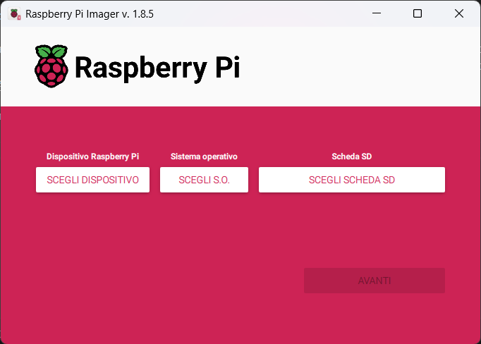
In 'CHOOSE DEVICE' you have to select 'Raspberry Pi 5'
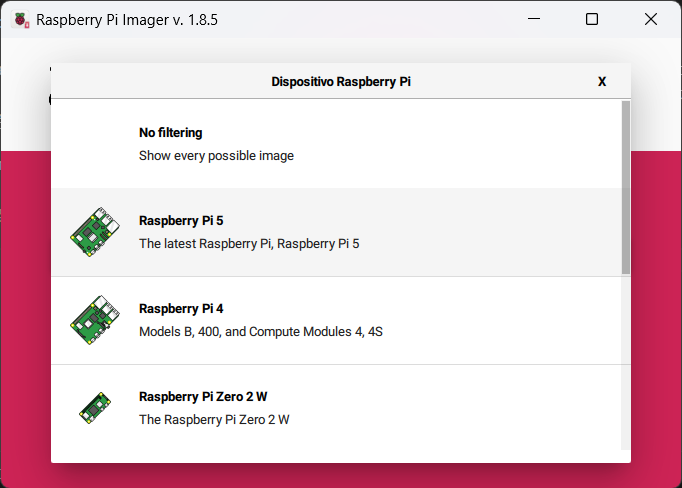
In 'CHOOSE OS' you have to select 'Other general-purpose OS', then select 'Ubuntu', then an Ubuntu Server LTS edition.
Tip
I decided to use Ubuntu Server as it is a very lightweight operating system and does not interfere with running Windows.
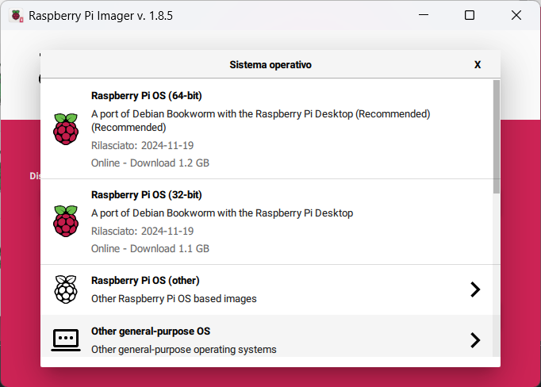
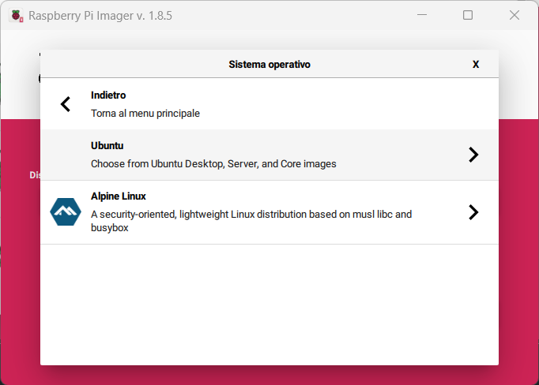
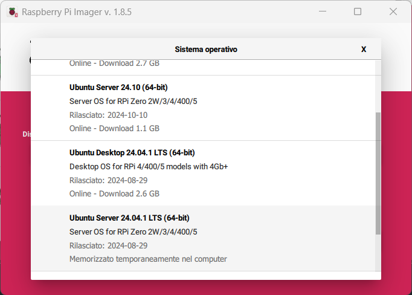
Finally, in 'CHOOSE STORAGE' you have to select the drive that you will use in your Raspberry Pi 5.
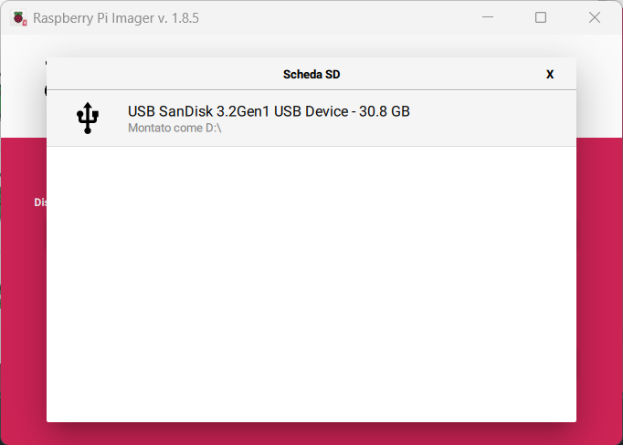
The 'NEXT' button will then unlock and once clicked you will be able to customize your installation. Just click 'EDIT SETTINGS' and set appropiate settings.
In the 'GENERAL' tab flag the option 'Set username and password'. You need it to authenticate through SSH later. Then if you wanna use the WiFi, flag the option 'Configure WiFi'. In the 'SERVICES' tab flag the option 'Enable SSH'. Finally click 'SAVE'.
Warning
Avoid to use the WiFi. Sometimes WiFi 5GHz and WPA3-Personal as authentication may not work properly. Use the Ethernet connection instead.
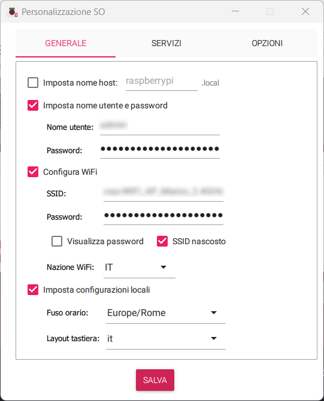
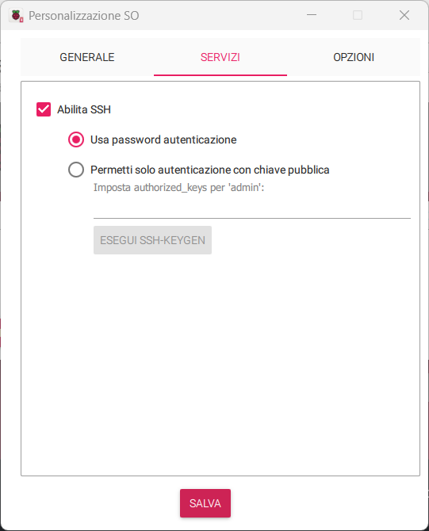
Now, you are ready! Just click 'Yes' to apply your settings and the host OS will be installed in your Raspberry Pi 5. It usually takes a few minutes and depends mostly on the speed of your Internet connection.
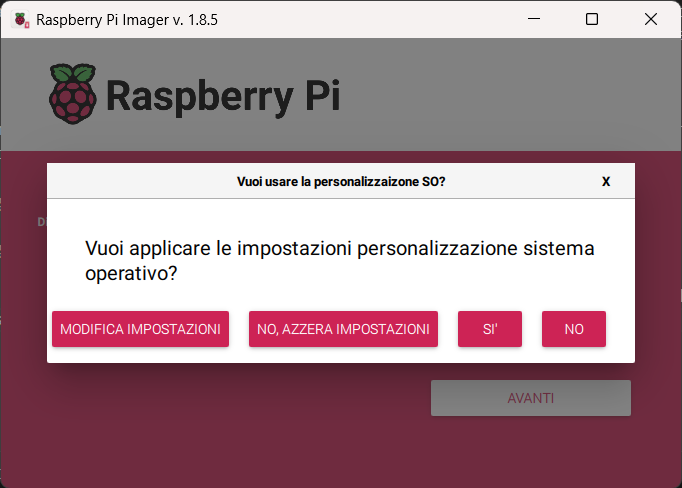
First boot
Plug the drive into your Raspberry Pi 5 then power it up and wait a few minutes for it to be ready to SSH into.
Before proceeding you will need to locate the local IP address where your Raspberry Pi 5 is connected. To do this, access the configuration page of your router and check which is the correct IP.
Once you have found the IP address, connect to your Raspberry Pi 5 with an SSH client. For example, on Windows you can use the ssh command to connect with the Terminal or you can use PuTTY. Enter the credentials you configured earlier and connect.
Before you begin you will need to update your host operating system. Since we are using Ubuntu you will need to run these commands.
sudo apt update && sudo apt upgrade -y
Install Raspberry Pi kernel drivers with this command (optional).
sudo apt install linux-raspi -y
Install QEMU and dependencies
Now you are ready to start installing all the dependencies needed to run the VM with Windows 11. We then install QEMU with the following command.
sudo apt install qemu-system-arm qemu-utils -y
Install PipeWire, a media server used in many modern Linux systems to handle audio and video.
sudo apt install pipewire pipewire-audio-client-libraries -y
Configure the TPM
Windows 11 except the IoT version, requires the TPM to run so we need to configure it.
Install swtpm, a package to emulate the TPM.
sudo apt install swtpm -y
Create a folder to save TPM things in.
mkdir -p /tmp/win11tpm
Create a service. This will make it start automatically every time you reboot your Rasperry Pi 5.
sudo nano /etc/systemd/system/swtpm.service
Paste this content into and save.
[Unit]
Description=swtpm service
After=network.target
[Service]
ExecStart=/usr/bin/swtpm socket --tpm2 --tpmstate dir=/tmp/win11tpm --ctrl type=unixio,path=/tmp/win11tpm/swtpm-sock
Restart=always
User=root
Group=root
[Install]
WantedBy=multi-user.target
Reload the services of systemd.
sudo systemctl daemon-reload
Enable and start the service.
sudo systemctl enable --now swtpm.service
Check if everything it's ok.
sudo systemctl status swtpm.service
Configure the VM
To make the VM creation process easier, let's create a new folder that contains everything essential to start the VM. We call the new folder qemu.
mkdir qemu && cd qemu
Now let's create the image file that contains Windows when we use the VM. Windows 11 requires 64 GB or more space to run. In this case I will create a drive with 128 GB of space. You can increase or decrease the space if you want.
qemu-img create win11-arm64.img 128G
The file name of the drive it's win11-arm64.img. You can choose another name if you want.
Now you need the UEFI firmware to run Windows 11 correctly. You can download required files with sending these commands.
wget https://raw.githubusercontent.com/Marko97IT/rpi5-qemu-win11.github.io/refs/heads/main/assets/uefi/QEMU_EFI-pflash.raw
wget https://raw.githubusercontent.com/Marko97IT/rpi5-qemu-win11.github.io/refs/heads/main/assets/uefi/QEMU_VARS-pflash.raw
Download VirtIO drivers with this command.
wget https://raw.githubusercontent.com/Marko97IT/rpi5-qemu-win11.github.io/refs/heads/main/assets/drivers/virtio-win-0.1.266.iso
Also, you need to download the ISO of Windows 11 ARM64. You can use the command wget to download it from the Raspberry Pi 5.
An example of command can be this.
Tip
Consider the Windows 11 IoT Enterprise edition. It is specifically built for IoT devices.
wget https://site.com/urlwin11.iso
Now, you can start the VM and install Windows 11. Run this command. If you have a little bit of skill you can tweak the command to customize your VM.
Warning
The command sets 7 GB of RAM because I have 8 GB of RAM. If you have a Raspberry Pi 5 with less RAM, change the -m 7G value to a different amount.
Leave a minimum amount of RAM for the host OS or you may experience instability. 1 GB of memory should be sufficient.
Info
Change the value win11.iso with the name of your ISO.
sudo qemu-system-aarch64 \
-M virt \
-m 7G \
-cpu max \
-smp 4,cores=2,threads=2 \
--accel kvm \
-drive if=pflash,file=./QEMU_EFI-pflash.raw,format=raw \
-drive if=pflash,file=./QEMU_VARS-pflash.raw,format=raw \
-device ramfb \
-device qemu-xhci \
-device usb-ehci \
-device usb-kbd \
-device usb-tablet \
-device virtio-gpu \
-device usb-storage,drive=install \
-drive if=none,id=install,format=raw,media=cdrom,file=./win11.iso \
-device usb-storage,drive=virtio-drivers \
-drive if=none,id=virtio-drivers,format=raw,media=cdrom,file=./virtio-win-0.1.266.iso \
-chardev socket,id=chrtpm,path=/tmp/win11tpm/swtpm-sock \
-tpmdev emulator,id=tpm0,chardev=chrtpm \
-device tpm-tis-device,tpmdev=tpm0 \
-nic user,model=virtio-net-pci \
-drive if=virtio,id=system,format=raw,file=./win11-arm64.img \
-vnc :0
Install Windows 11
Since Windows setup requires you to press any key to start the installation, before running the command to start the VM, install a VNC client and have it ready to connect. The IP address for the VNC connection will be the same as the one you use to connect with SSH to your Raspberry Pi 5. Once you run the command to start the VM quickly connect to VNC to start the installation when prompted.
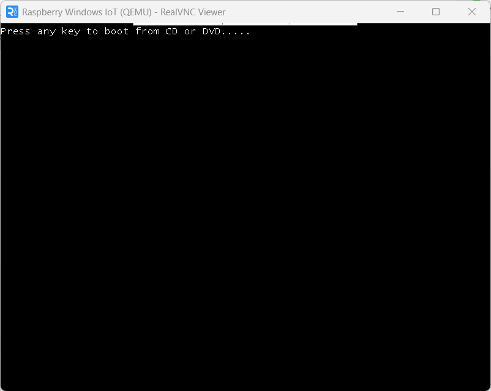
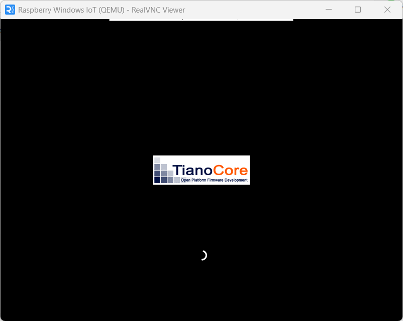
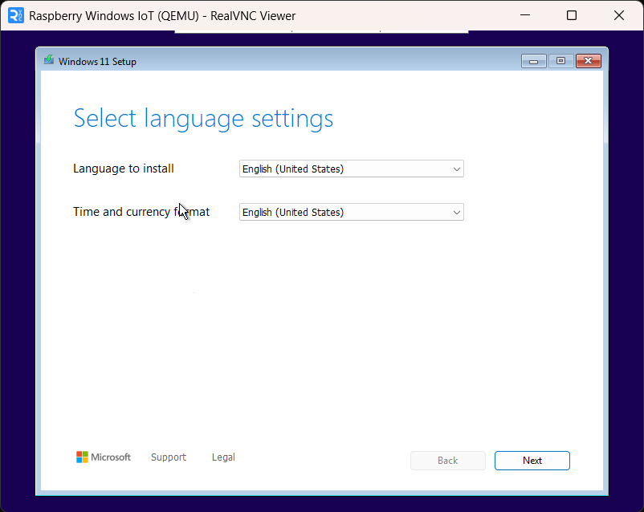
Most likely your Windows installation does not have the drivers needed to view the disks. You will need to install the drivers to continue. Click 'Load Driver' then press 'Browse'.
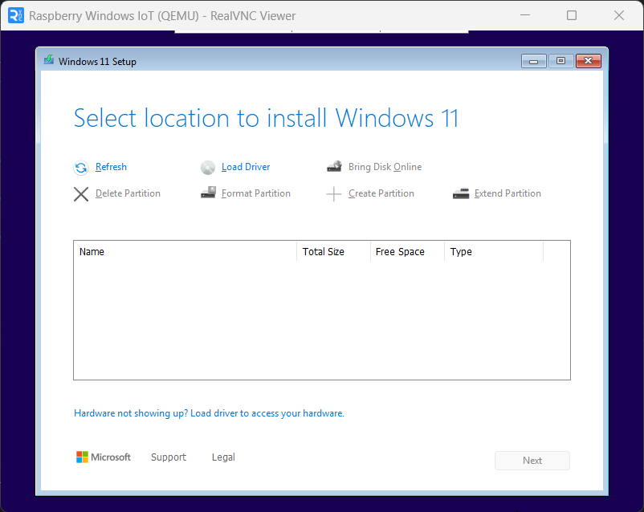
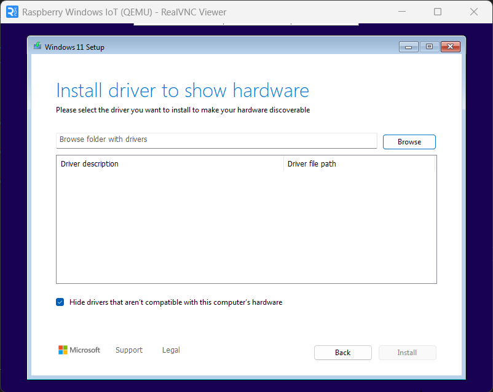
Navigate to E:\viostor\w11\ARM64 and continue. May be the drive letter isn't E:, so you have to select the drive named virtio-win....
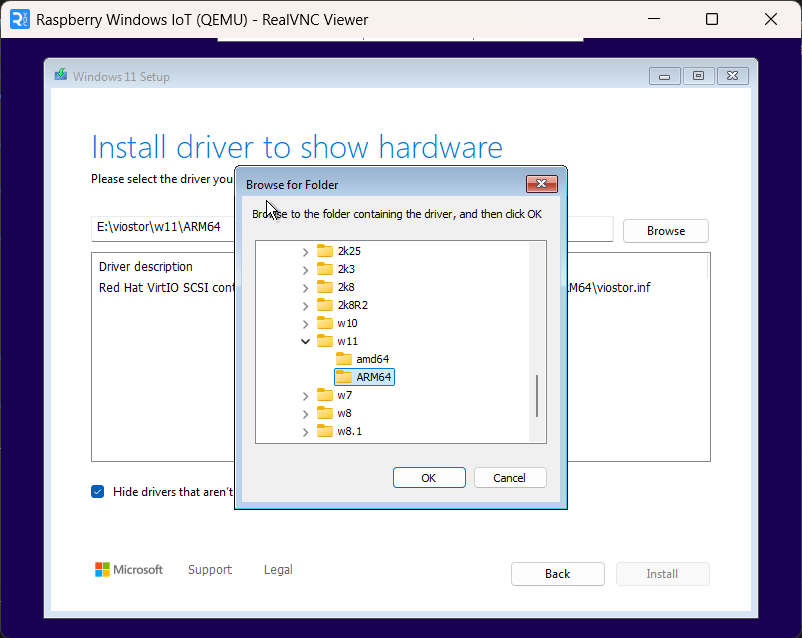
Select Red Hat VirtIO SCSI controller and press 'Install'.
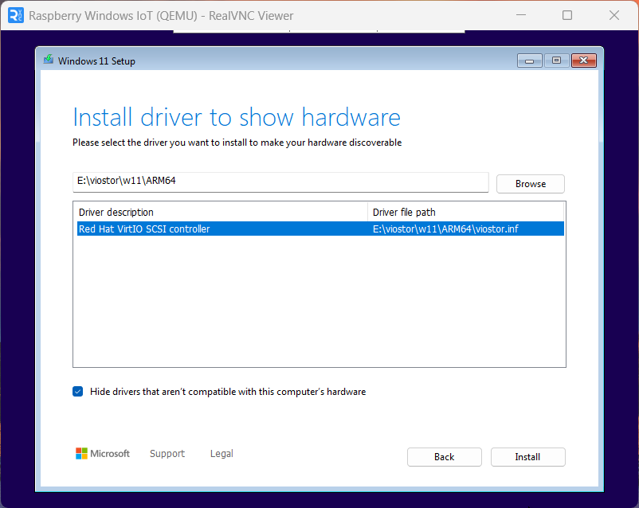
Now you can install Windows in Disk 0.
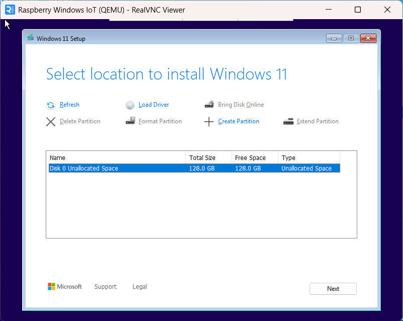
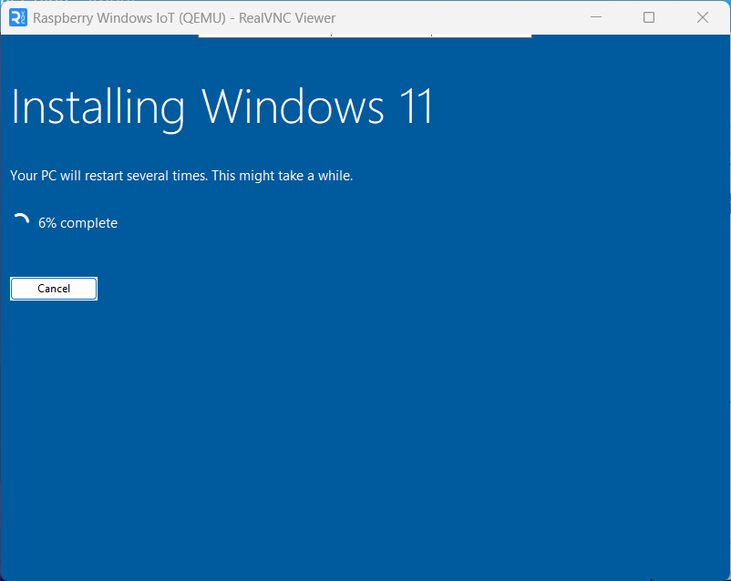
Now complete OOBE setting of Windows without the Internet connection.
Info
If you want to connect to the VM with RDP, you will need to set a password for the user.
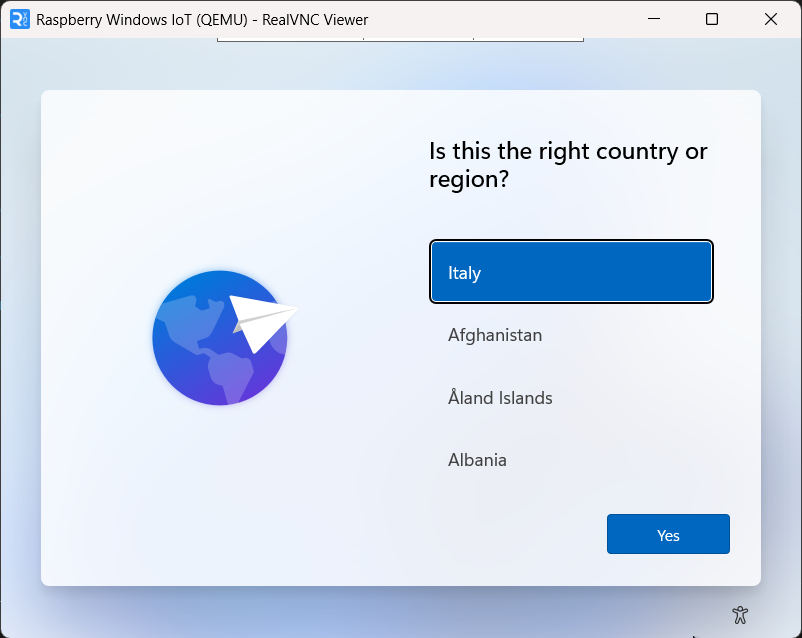
When you're in the Desktop, go to Start and search 'Device Manager' and open it.
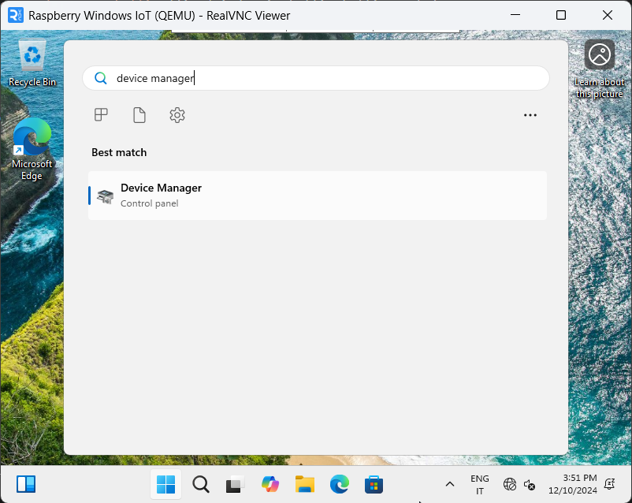
Click the 'Add driver' button and navigate to the CD-ROM drive of VirIO drivers, then press 'Next'. Leave the flag 'Include subfolders' enabled.
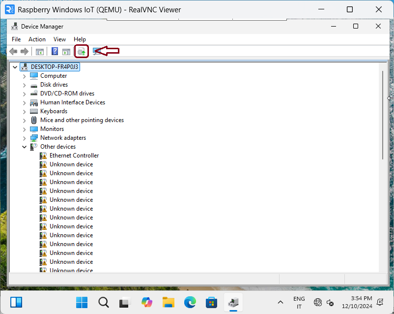
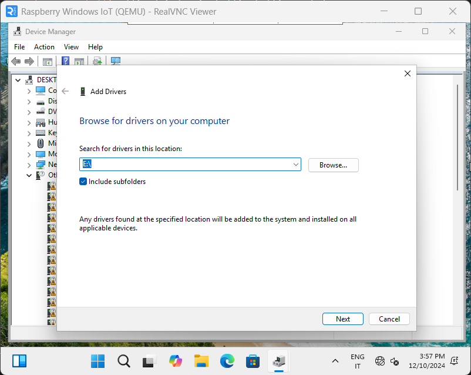
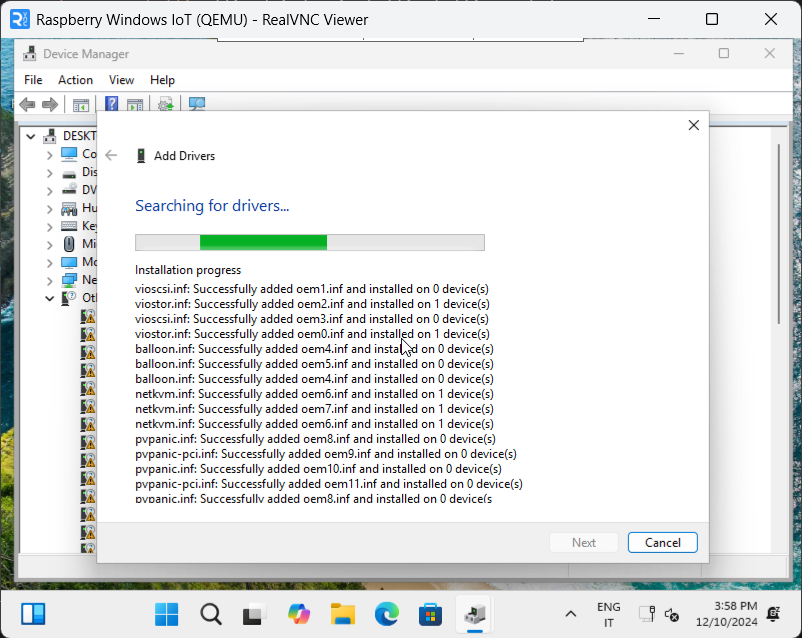
When the installation is finished, don't reboot Windows, just close the window.
Go to Start and search 'Remote desktop settings' and open it.
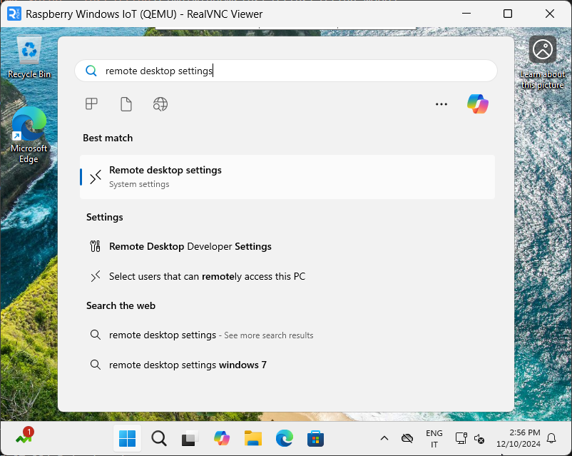
Flag 'Remote Desktop' and press 'Confirm'. Now you can connect to the VM with RDP.
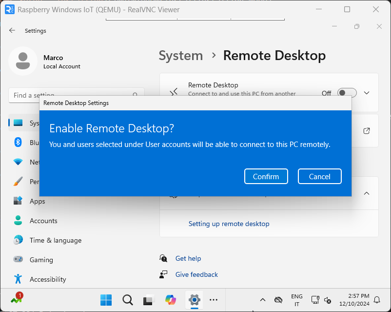
Finally, shutdown Windows and stop the VM by pressing CTRL + C in the SSH console.
Use Screen
To keep the VM alive and be able to exit the SSH console we use a very powerful tool called screen.
Run this command to create a new screen.
screen -S VM
Run the command to run the VM. This time the command is little different since we don't need the VirtIO driver drive and the Windows installation drive.
sudo qemu-system-aarch64 \
-M virt \
-m 7G \
-cpu max \
-smp 4,cores=2,threads=2 \
--accel kvm \
-drive if=pflash,file=./QEMU_EFI-pflash.raw,format=raw \
-drive if=pflash,file=./QEMU_VARS-pflash.raw,format=raw \
-device qemu-xhci \
-device usb-ehci \
-device usb-kbd \
-device usb-tablet \
-device virtio-gpu \
-chardev socket,id=chrtpm,path=/tmp/win11tpm/swtpm-sock \
-tpmdev emulator,id=tpm0,chardev=chrtpm \
-device tpm-tis-device,tpmdev=tpm0 \
-nic user,model=virtio-net-pci,hostfwd=tcp::3389-:3389 \
-drive if=virtio,id=system,format=raw,file=./win11-arm64.img \
-vnc :0
Then, you can exit the screen session pressing CTRL + A + D. You can see the screen sessions sending this command.
screen -ls
If the screen is enabled you'll see an output like it and VM will still up.
There is a screen on:
8188.VM (12/10/24 08:15:42) (Detached)
1 Socket in /run/screen/S-admin.
To resume the screen just run this command.
screen -r VM
Enjoy Windows 11
The guide is now complete. Simply boot the VM with screen and you will have a fully functional Windows 11 VM.
You can connect with VNC or RDP using the host's IP address.
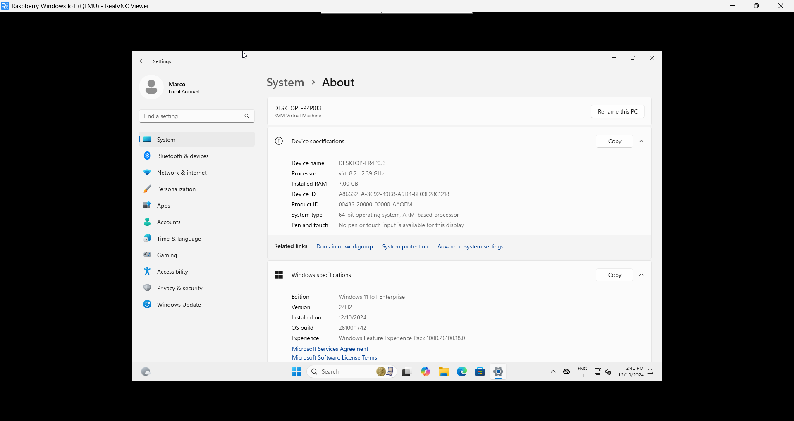
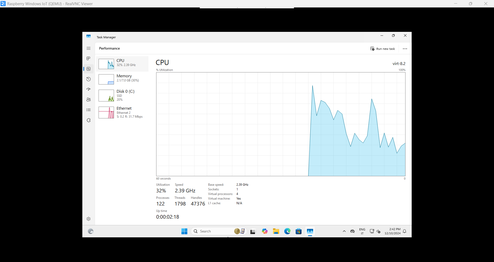